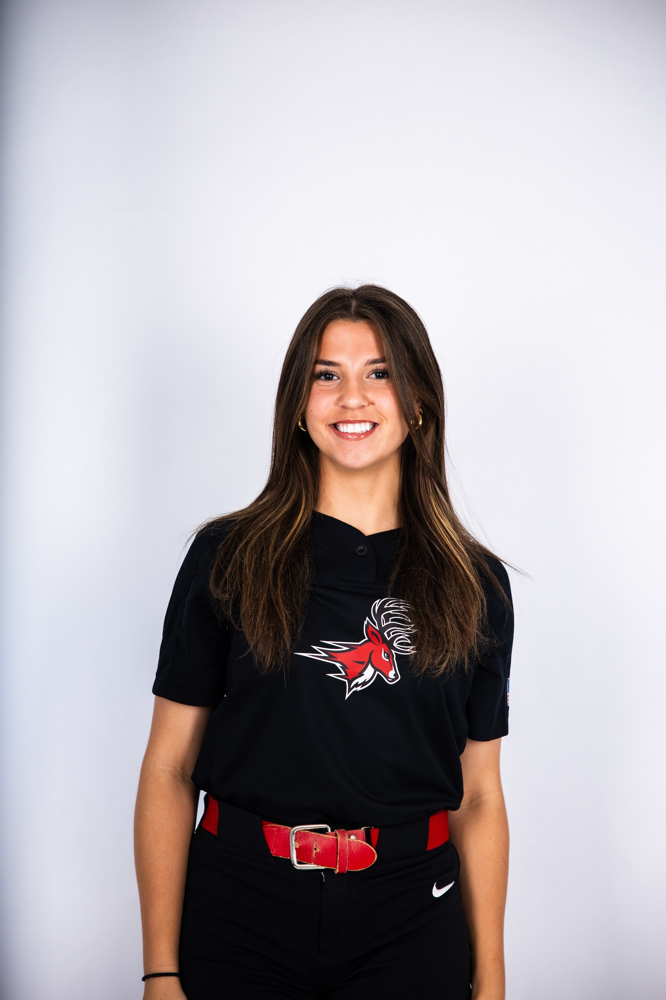

A.
Private Softball Instructor
Self-Employed · Manorville, NY
June 2026 — Present
Provide personalized one-on-one softball instruction, offering constructive feedback to improve each athlete's skills, technique, and overall performance.
Marketing · Athletics · Leadership
Marketing Student & NCAA Division I Student-Athlete
Fairfield University marketing student combining creativity, communication, leadership, and the discipline developed through collegiate athletics.

ABOUT
I am a marketing student at Fairfield University and an NCAA Division I softball player. My experiences in athletics, coaching, service, and academics have strengthened my communication, teamwork, leadership, and ability to perform in fast-paced environments.
PROFESSIONAL EXPERIENCE
A.
Self-Employed · Manorville, NY
June 2026 — Present
Provide personalized one-on-one softball instruction, offering constructive feedback to improve each athlete's skills, technique, and overall performance.
B.
Team Long Island · Hicksville, NY
June 2026 — Present
Coach and mentor youth softball players during practices, training sessions, and games.
C.
St. Anthony's High School · South Huntington, NY
July 2024 — Present
Supervise and instruct young softball players by leading engaging drills and activities that develop their skills and confidence.
EDUCATION
Marketing · September 2025 — Present
NCAA Division I Student-Athlete — Softball
High School Diploma · 2021 — 2025
Varsity Softball · Varsity Softball Captain · Community Service Outreach Club
CLUBS & ORGANIZATIONS
01.
Support mental health and wellness initiatives for student-athletes while promoting a positive, inclusive, and supportive athletic community.
02.
Patchogue, NY
Create handmade quilts and gift baskets donated to children in local hospitals and care facilities to provide comfort and support during difficult times.
SELECTED HONORS
2026 Dean's List
2025 16th Overall Class Rank
2023–2025 National Honor Society
2025 Scholar Athlete Award
2021–2025 Principal's Honor Roll
2026 2nd Team All Conference
2026 All Rookie Team — Unanimous Selection
2025 New York State All State — 1st Team
2024–2025 Newsday All Long Island
2023–2025 CHSAA All League
LET'S CONNECT